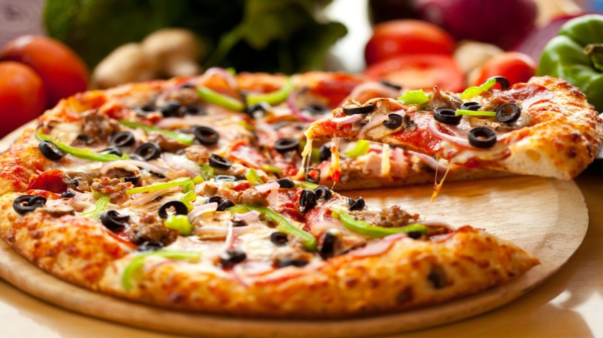

Pizza

Description
Pizza is a popular and versatile Italian dish loved worldwide.
It typically consists of a round, flat dough base, often topped with tomato sauce, cheese, and various ingredients such as meats, vegetables, and herbs.
The dough is traditionally made from wheat flour, water, yeast, and salt, and it is baked in an oven.
The combination of ingredients offers a variety of flavors and textures, ranging from the gooey richness of melted cheese to the savory and sometimes spicy notes of the toppings.
Pizza can be found in numerous styles, including the classic Margherita with tomato, mozzarella, and basil, as well as a wide array of creative and regional variations catering to diverse tastes.
Whether enjoyed as a quick meal or a shared social experience, pizza remains an iconic and beloved dish around the globe.
Ingredients
- Pizza dough
- Tomato sauce
- Mozzarella cheese (shredded or fresh)
- Olive oil
- Toppings (e.g., pepperoni, mushrooms, bell peppers, olives, onions, etc.)
- Fresh basil (optional)
- Salt and pepper (to taste)
Steps
- Roll out or stretch pizza dough to desired thickness.
- Preheat the oven to a high temperature (around 475°F or 245°C).
- Spread a layer of tomato sauce over the dough.
- Sprinkle shredded or fresh mozzarella cheese evenly.
- Add desired toppings like pepperoni, mushrooms, bell peppers, olives, and onions.
- Drizzle with olive oil and season with salt and pepper.
- Place the pizza on a preheated pizza stone or baking sheet.
- Bake in the preheated oven until the crust is golden and the cheese is melted and bubbly (typically 10-15 minutes).
- Optional: Add fresh basil or additional toppings after baking.
- Allow the pizza to cool slightly before slicing.
- Slice and enjoy your homemade pizza!